1
Thuê trang trại
Menu → 🗺️ Bản đồ → Trang trại → Thuê. Cọc 5.000K, thuê 700K/tháng, mỗi lô mở thêm cộng 150K/tháng. Thuê được bất cứ lúc nào, không cần mở hết quán.
Tự trồng rau, lúa mì, lúa và nuôi gà, lợn, bò để có nguyên liệu rẻ cho mọi quán. Mọi hình dưới đây chụp thẳng từ game.
Dư thì bán ra chợ ở Bản đồ → Kho tổng, giá đúng bằng giá chợ.
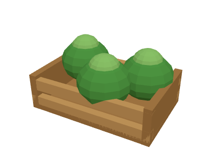
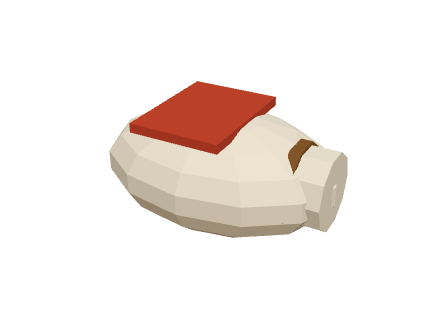
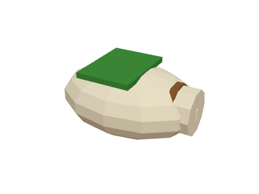
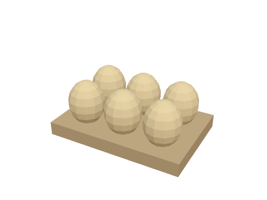
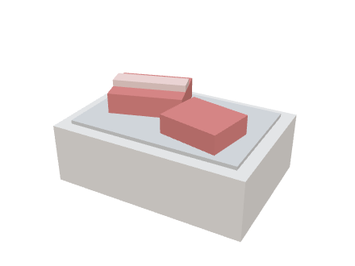
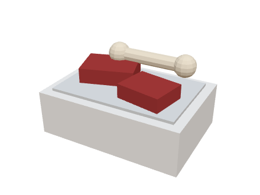
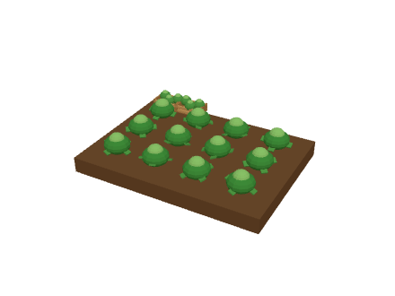
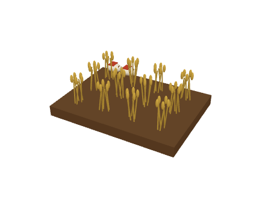
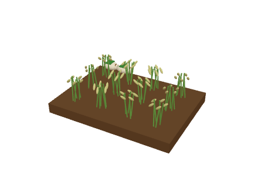
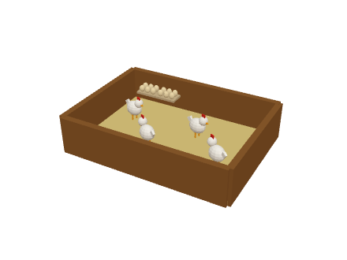
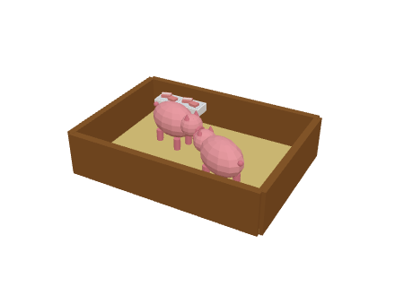
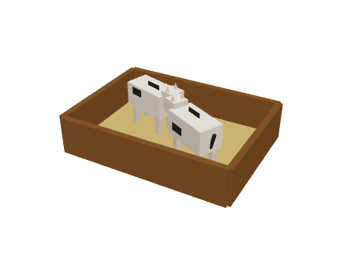
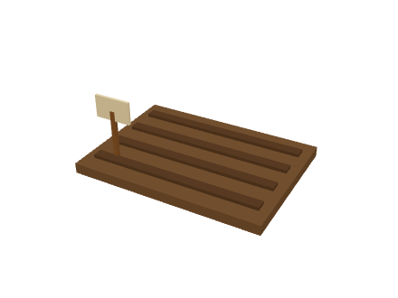
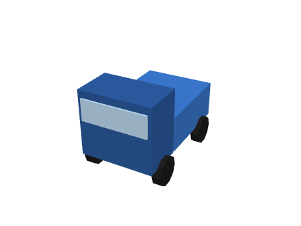
Menu → 🗺️ Bản đồ → Trang trại → Thuê. Cọc 5.000K, thuê 700K/tháng, mỗi lô mở thêm cộng 150K/tháng. Thuê được bất cứ lúc nào, không cần mở hết quán.
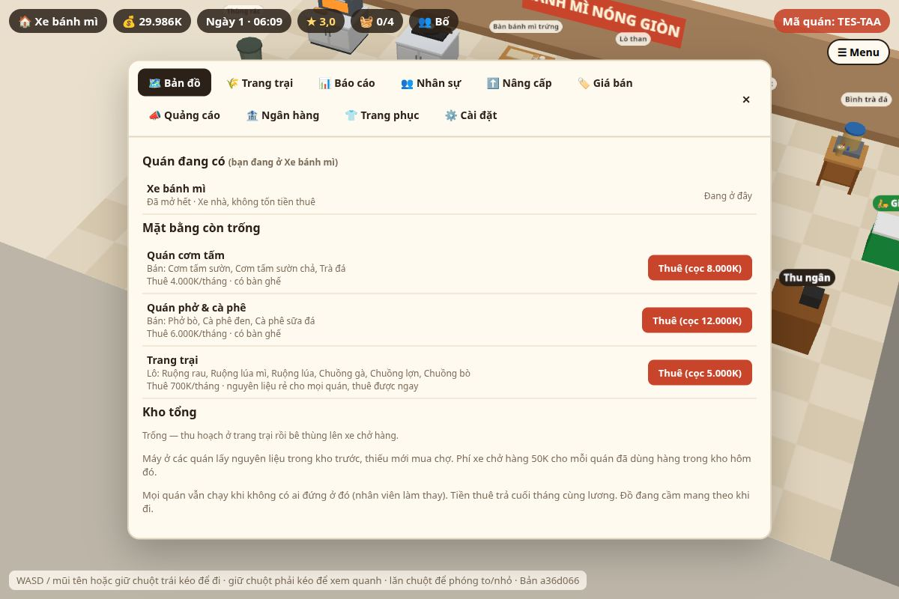
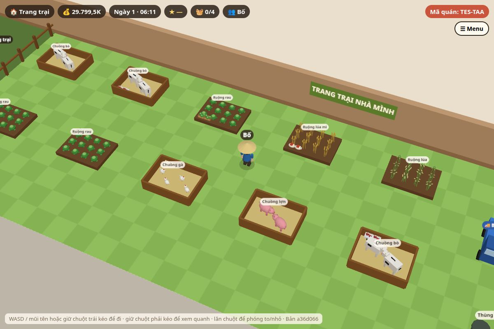
Mỗi lô tự trả tiền giống, lớn trong 40–120 giây rồi ra một thùng ở mép lô phía lối đi (giữ tối đa 3). Đứng cạnh lô là tự nhặt, mỗi thùng 0,45 giây; số 3/4 trên đầu là số thùng đang cầm.
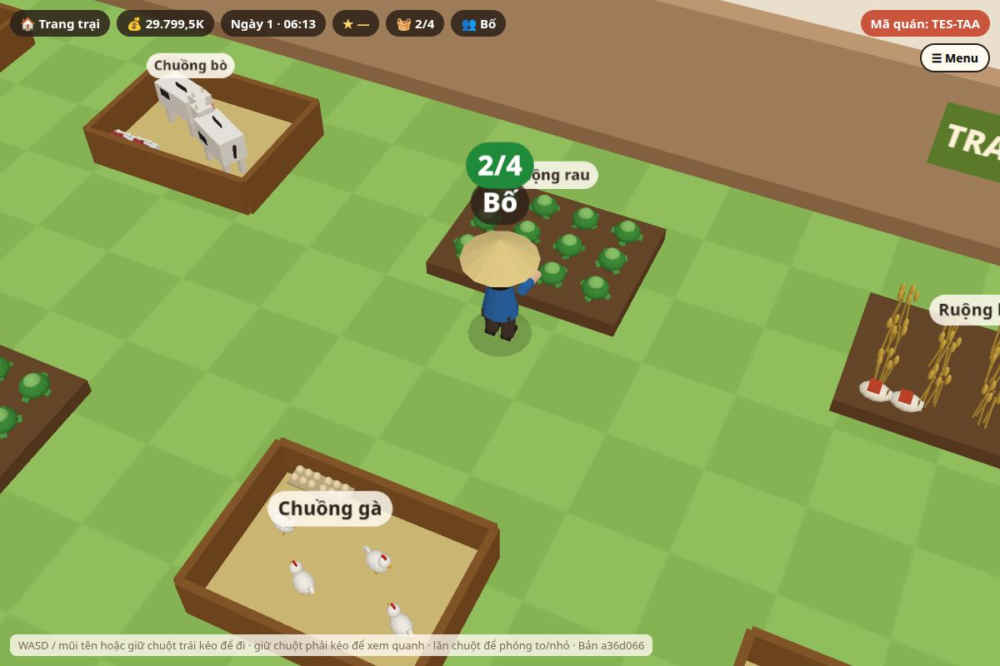
Đi tới xe: thùng tự bốc lên (0,2 giây/thùng), chữ 📦 Vào kho bay lên, nguyên liệu vào kho tổng ngay. Món không phải thùng hàng thì không bốc lên xe được, nên không sợ bỏ nhầm.
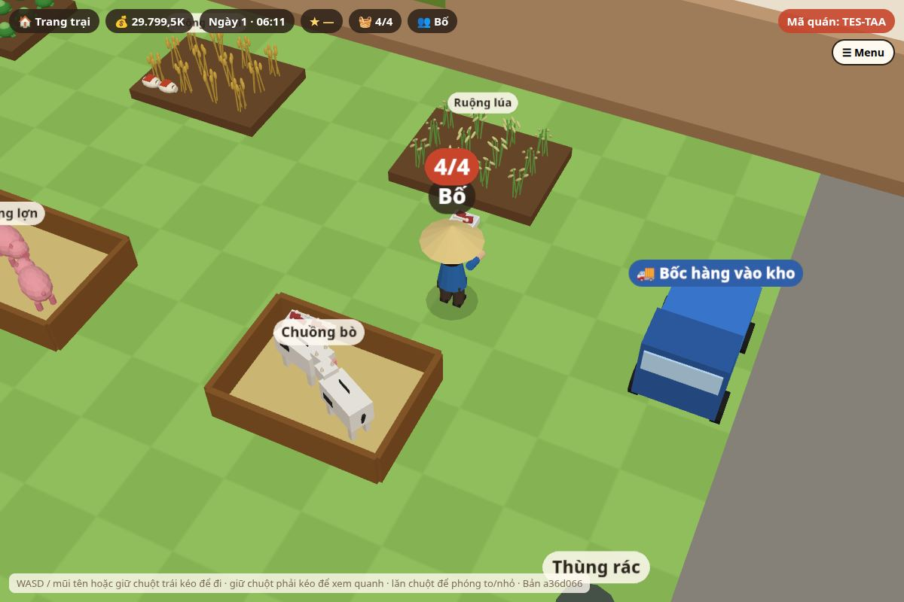
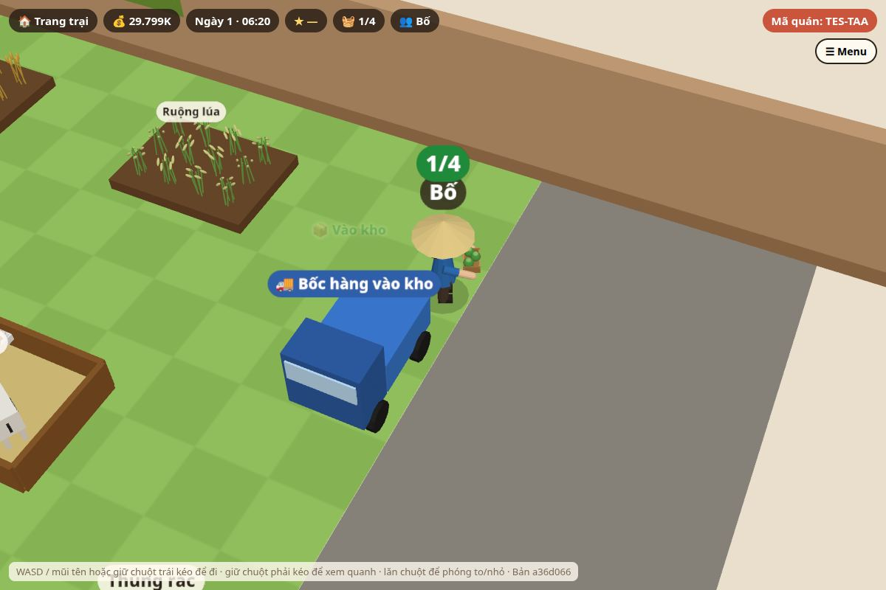
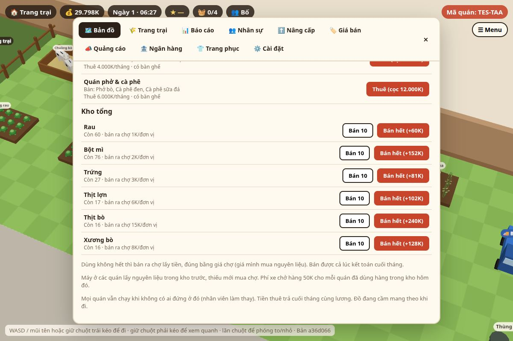
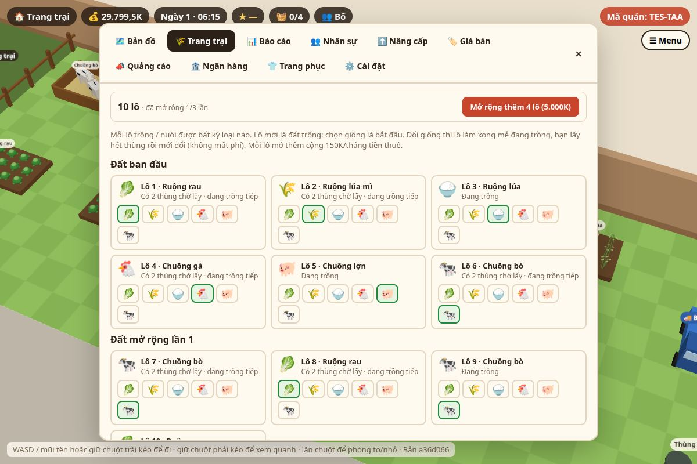
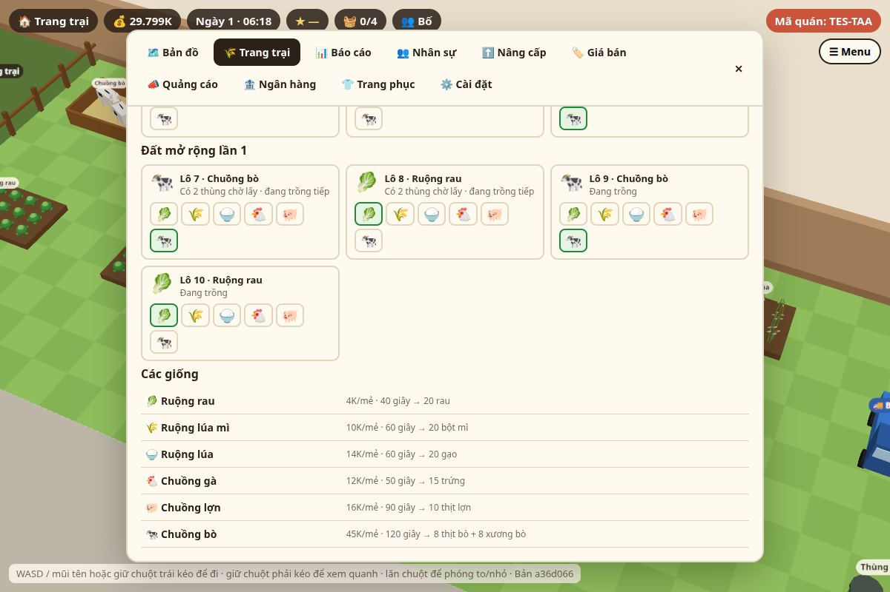
Menu → ⬆️ Nâng cấp: mỗi lô nâng 3 cấp (nhanh hơn 15% và chứa thêm thùng mỗi cấp). Tắt máy dừng lô sau mẻ đang trồng, không tốn tiền giống khi kho đã đầy loại đó.
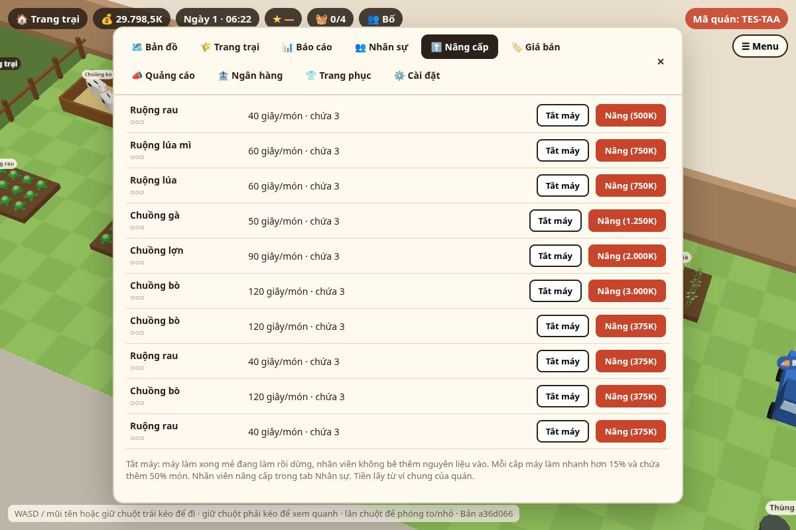
Đứng ở trang trại, mở Menu → 👥 Nhân sự, bấm Thuê. Lương từ 120K/ngày, cộng dồn và trả cuối tháng.
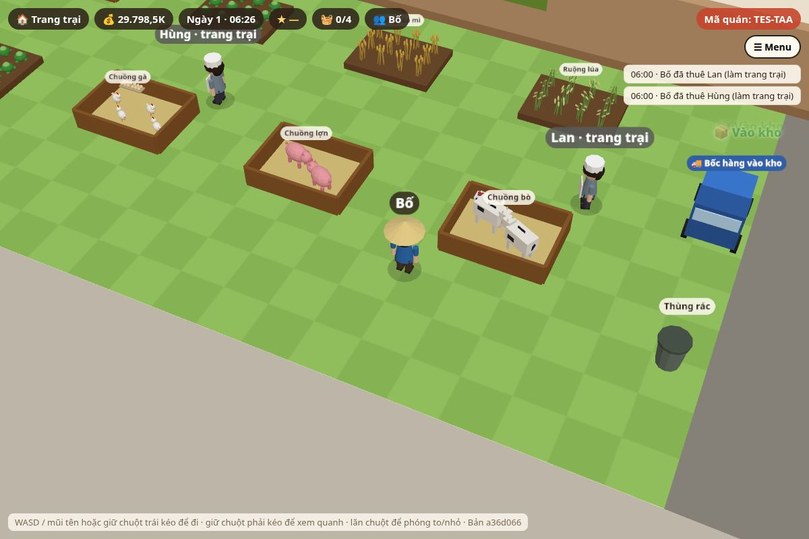
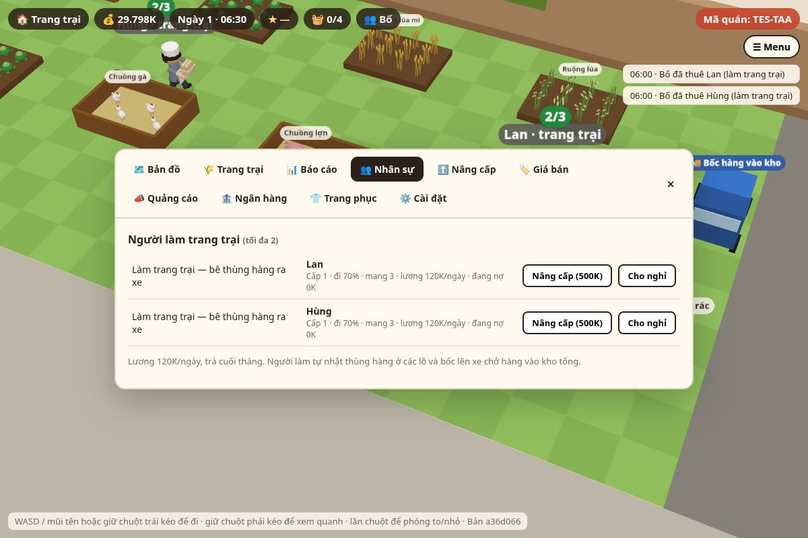
Tiền giống mỗi mẻ chỉ khoảng 20–30% giá chợ của số nguyên liệu thu được. Lời thật còn trừ tiền thuê, lương nông dân và phí chở.
| Giống | Giống / mẻ | Thời gian | Ra 1 thùng | Giá chợ | Quán dùng | |
|---|---|---|---|---|---|---|
| 🥬 Rau | 4K | 40 giây | 20 rau | 20K | Mọi bàn ghép món | |
| 🌾 Lúa mì | 10K | 60 giây | 20 bột mì | 40K | Lò bánh mì | |
| 🍚 Lúa | 14K | 60 giây | 20 gạo | 60K | Nồi cơm, máy bánh phở | |
| 🐔 Gà | 12K | 50 giây | 15 trứng | 45K | Chảo ốp la, chảo chả trứng | |
| 🐖 Lợn | 16K | 90 giây | 10 thịt lợn | 60K | Lò than, lò sườn, chả | |
| 🐄 Bò | 45K | 120 giây | 8 thịt bò + 8 xương bò | 184K | Quán phở |